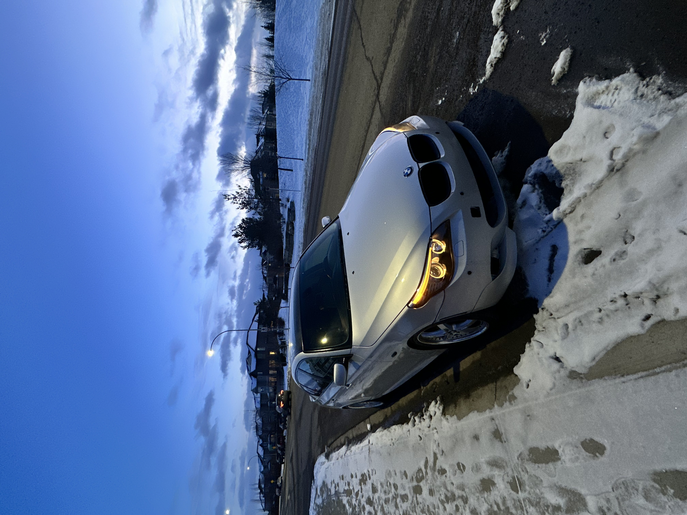
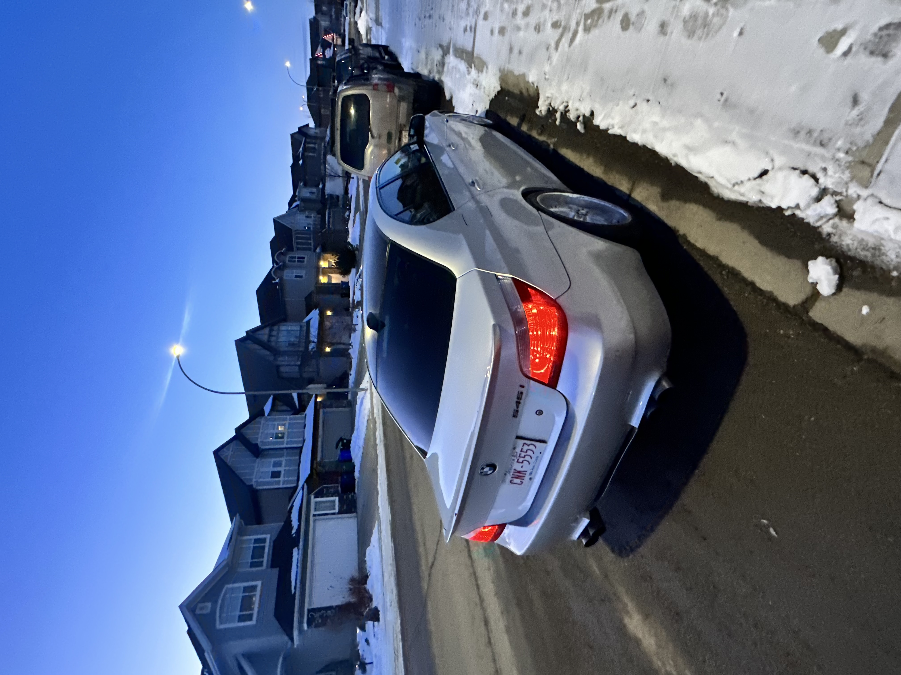

Abdullah Irfan's Build


Abdullah's 2004 BMW 545i is today's build of the day; it has the rare combination of the SMG gearbox and a stage 2+ clutch. There have only ever been a few thousand of these combos made, making them genuinely unique. Abdullah has improved the appearance and performance of his vehicle with tasteful modifications. First up, the sleek and aggressive appearance of the BMW M5 front and rear bumpers is achieved by seamless integration. A hint of refinement is added to the ensemble with the addition of TSW JARAMA three-piece wheels., Abdullah hasn't stopped there he added a quad-tip valvetronic exhaust system that enhances the V8's sound, making it unmissable on the streets. In addition to increasing visibility, the updated LCI headlights give the car's exterior a more contemporary look. Not to mention the custom ducklip on the back perfectly complements the vehicle's silver hue. Entering the vehicle, upgraded Logic 7 surround sound speakers elevate luxury to provide top-notch audio for every drive. The interior is enhanced by the M5 seats and steering wheel, which offer comfort and style. Speaking of comfort, Abdullah chose to equip the car with Solowerks S1 coilovers, giving the car that coveted low stance while enhancing its sporty handling. A black roof wrap and tinted windows pull everything together and offer a mysterious touch that finishes the look elegantly. Abdullah's meticulous attention to detail and tasteful modifications serve as an inspiration to enthusiasts everywhere. Join us again tomorrow for another exciting build of the day! |